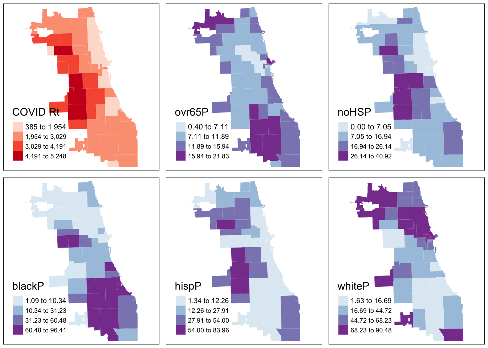
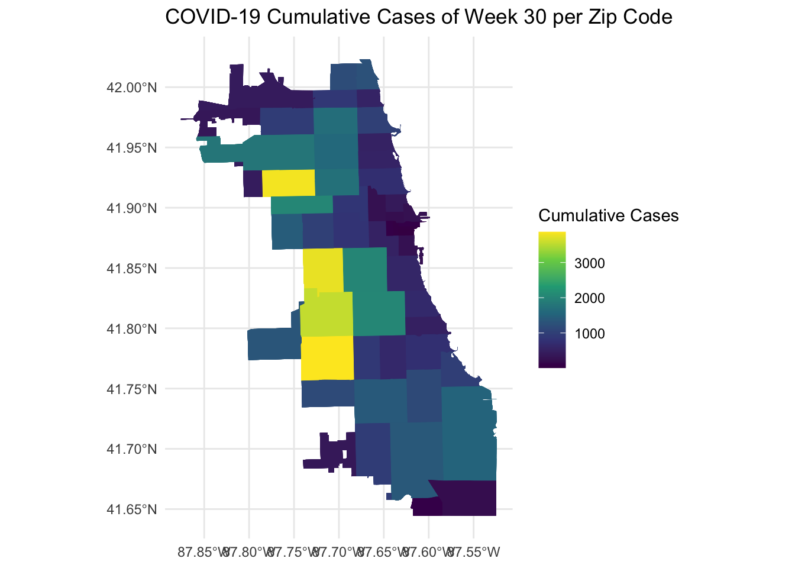
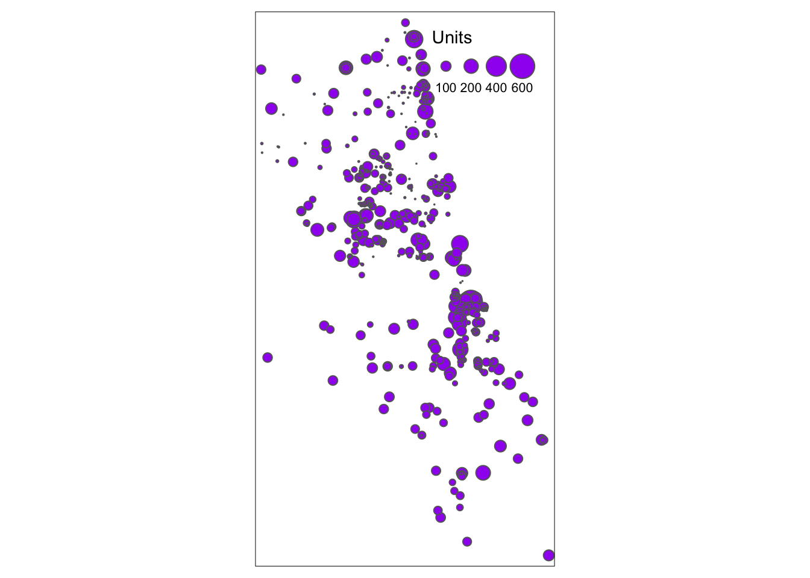
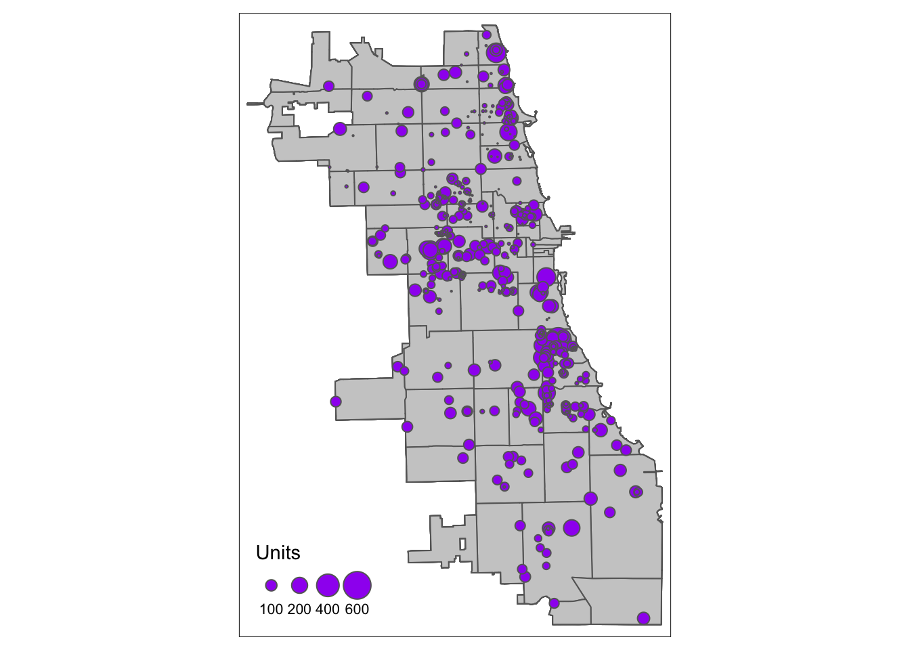

A Data Wrangling in R
In this part of our toolkit, we’re going to learn how to do the same things we did with Chapter 4 - Spatial Data Wrangling, but this time, we’ll use R code to handle our spatial data.
Getting Started
R is a great choice for starting in data science because it’s built for it. It’s not just a programming language, it is a whole system with tools and libraries made to help you think and work like a data scientist easily.
We assume a basic knowledge of R and coding languages for these toolkits. For most of the tutorials in this toolkit, you’ll need to have R and RStudio downloaded and installed on your system. You should be able to install packages, know how to find the address to a folder on your computer system, and have very basic familiarity with R.
Tutorials for R
If you are new to R, we recommend the following intro-level tutorials provided through installation guides. You can also refer to this R for Social Scientists tutorial developed by Data Carpentry for a refresher.
You can also visit the RStudio Education page to select a learning path tailored to your experience level (Beginners, Intermediates, Experts). They offer detailed instructions to learners at different stages of their R journey.
A.1 Environmental Setup
Getting started with data analysis in R involves a few preliminary steps, including downloading datasets and setting up a working directory. This introduction will guide you through these essential steps to ensure a smooth start to your data analysis journey in R.
Download the Activity Datasets
Please download and unzip this file to get started: SDOHPlace-DataWrangling.zip
Setting Up the Working Directory
Setting up a working directory in R is crucial as it defines the location on your computer where your files and scripts will be saved and accessed. You can set the working directory to any folder on your system where you plan to store your datasets and R scripts. To set your working directory, use the setwd("/path/to/your/directory") and specify the path to your desired directory.
Installing & Working with R Libraries
Before starting operations related to spatial data, we need to complete an environmental setup. This workshop requires several packages, which can be installed from CRAN:
sf: simplifies spatial data manipulationtmap: streamlines thematic map creationdplyr: facilitates data manipulationggplot2: enables advanced data visualizationtidygeocoder: converts addresses to coordinates easily
install.packages("sf", "tmap", "tidygeocoder", "dplyr", "ggplot2")Installation Tip
For Mac users, check out https://github.com/r-spatial/sf for additional tips if you run into errors when installing the sf package. Using homebrew to install gdal usually fixes any remaining issues.
Now, loading the required libraries for further steps:
library(sf)
library(dplyr)
library(ggplot2)A.2 Intro to Spatial Data
Spatial data analysis in R provides a robust framework for understanding geographical information, enabling users to explore, visualize, and model spatial relationships directly within their data. Through the integration of specialized packages like sf for spatial data manipulation, ggplot2 and tmap for advanced mapping, and tidygeocoder for geocoding, R becomes a powerful tool for geographic data science. This ecosystem allows researchers and analysts to uncover spatial patterns, analyze geographic trends, and produce detailed maps that convey complex information intuitively.
Load Spatial Data
We need to load the spatial data (shapefile). Remember, this type of data is actually comprised of multiple files. All need to be present in order to read correctly. Let’s use chicagotracts.shp for practice, which includes the census tracts boundary in Chicago.
First, we need to read the shapefile data from where you save it.
Chi_tracts = st_read("SDOHPlace-DataWrangling/chicagotracts.shp")## Reading layer `chicagotracts' from data source
## `/Users/maryniakolak/Code/sdhoplace-toolkit/SDOHPlace-DataWrangling/chicagotracts.shp'
## using driver `ESRI Shapefile'
## Simple feature collection with 801 features and 9 fields
## Geometry type: POLYGON
## Dimension: XY
## Bounding box: xmin: -87.94025 ymin: 41.64429 xmax: -87.52366 ymax: 42.02392
## Geodetic CRS: WGS 84Always inspect data when loading in. Let’s look at a non-spatial view.
head(Chi_tracts)## Simple feature collection with 6 features and 9 fields
## Geometry type: POLYGON
## Dimension: XY
## Bounding box: xmin: -87.68822 ymin: 41.72902 xmax: -87.62394 ymax: 41.87455
## Geodetic CRS: WGS 84
## commarea commarea_n countyfp10 geoid10
## 1 44 44 031 17031842400
## 2 59 59 031 17031840300
## 3 34 34 031 17031841100
## 4 31 31 031 17031841200
## 5 32 32 031 17031839000
## 6 28 28 031 17031838200
## name10 namelsad10 notes statefp10
## 1 8424 Census Tract 8424 <NA> 17
## 2 8403 Census Tract 8403 <NA> 17
## 3 8411 Census Tract 8411 <NA> 17
## 4 8412 Census Tract 8412 <NA> 17
## 5 8390 Census Tract 8390 <NA> 17
## 6 8382 Census Tract 8382 <NA> 17
## tractce10 geometry
## 1 842400 POLYGON ((-87.62405 41.7302...
## 2 840300 POLYGON ((-87.68608 41.8229...
## 3 841100 POLYGON ((-87.62935 41.8528...
## 4 841200 POLYGON ((-87.68813 41.8556...
## 5 839000 POLYGON ((-87.63312 41.8744...
## 6 838200 POLYGON ((-87.66782 41.8741...Check out the data structure of this file.
str(Chi_tracts)## Classes 'sf' and 'data.frame': 801 obs. of 10 variables:
## $ commarea : chr "44" "59" "34" "31" ...
## $ commarea_n: num 44 59 34 31 32 28 65 53 76 77 ...
## $ countyfp10: chr "031" "031" "031" "031" ...
## $ geoid10 : chr "17031842400" "17031840300" "17031841100" "17031841200" ...
## $ name10 : chr "8424" "8403" "8411" "8412" ...
## $ namelsad10: chr "Census Tract 8424" "Census Tract 8403" "Census Tract 8411" "Census Tract 8412" ...
## $ notes : chr NA NA NA NA ...
## $ statefp10 : chr "17" "17" "17" "17" ...
## $ tractce10 : chr "842400" "840300" "841100" "841200" ...
## $ geometry :sfc_POLYGON of length 801; first list element: List of 1
## ..$ : num [1:243, 1:2] -87.6 -87.6 -87.6 -87.6 -87.6 ...
## ..- attr(*, "class")= chr [1:3] "XY" "POLYGON" "sfg"
## - attr(*, "sf_column")= chr "geometry"
## - attr(*, "agr")= Factor w/ 3 levels "constant","aggregate",..: NA NA NA NA NA NA NA NA NA
## ..- attr(*, "names")= chr [1:9] "commarea" "commarea_n" "countyfp10" "geoid10" ...The data is no longer a shapefile but an sf object, comprised of polygons. The plot() command in R help to quickly visualizes the geometric shapes of Chicago’s census tracts. The output includes multiple maps because the sf framework enables previews of each attribute in our spatial file.
plot(Chi_tracts)
Then, we can use ggplot2 to create a base map. It plots the spatial data from Chi_tracts, applies a minimal theme for clarity, and labels the map with a title and a caption, offering a straightforward visualization of the area’s census tracts.
ggplot(data = Chi_tracts) +
geom_sf() +
theme_minimal() +
labs(title = "Census Tract Map of Chicago",
caption = "Chi_tracts")
A.3 Coordinate Reference Systems
For this exercise we will use chicagotracts.shp to explore how to change the projection of a spatial dataset in R. First, let’s check out the current coordinate reference system.
st_crs(Chi_tracts)## Coordinate Reference System:
## User input: WGS 84
## wkt:
## GEOGCRS["WGS 84",
## DATUM["World Geodetic System 1984",
## ELLIPSOID["WGS 84",6378137,298.257223563,
## LENGTHUNIT["metre",1]]],
## PRIMEM["Greenwich",0,
## ANGLEUNIT["degree",0.0174532925199433]],
## CS[ellipsoidal,2],
## AXIS["latitude",north,
## ORDER[1],
## ANGLEUNIT["degree",0.0174532925199433]],
## AXIS["longitude",east,
## ORDER[2],
## ANGLEUNIT["degree",0.0174532925199433]],
## ID["EPSG",4326]]We can use the st_transform function to transform CRS. When projecting a dataset of Illinois, the most appropriate NAD83 projection would be NAD83 UTM zone 16N. Chicago sits within the area best covered by NAD83 / Illinois East (ftUS) (EPSG:3435). After change the projection, we can plot the map.
Chi_tracts.3435 <- st_transform(Chi_tracts, "EPSG:3435")
# Chi_tracts.3435 <- st_transform(Chi_tracts, 3435)
st_crs(Chi_tracts.3435)## Coordinate Reference System:
## User input: EPSG:3435
## wkt:
## PROJCRS["NAD83 / Illinois East (ftUS)",
## BASEGEOGCRS["NAD83",
## DATUM["North American Datum 1983",
## ELLIPSOID["GRS 1980",6378137,298.257222101,
## LENGTHUNIT["metre",1]]],
## PRIMEM["Greenwich",0,
## ANGLEUNIT["degree",0.0174532925199433]],
## ID["EPSG",4269]],
## CONVERSION["SPCS83 Illinois East zone (US Survey feet)",
## METHOD["Transverse Mercator",
## ID["EPSG",9807]],
## PARAMETER["Latitude of natural origin",36.6666666666667,
## ANGLEUNIT["degree",0.0174532925199433],
## ID["EPSG",8801]],
## PARAMETER["Longitude of natural origin",-88.3333333333333,
## ANGLEUNIT["degree",0.0174532925199433],
## ID["EPSG",8802]],
## PARAMETER["Scale factor at natural origin",0.999975,
## SCALEUNIT["unity",1],
## ID["EPSG",8805]],
## PARAMETER["False easting",984250,
## LENGTHUNIT["US survey foot",0.304800609601219],
## ID["EPSG",8806]],
## PARAMETER["False northing",0,
## LENGTHUNIT["US survey foot",0.304800609601219],
## ID["EPSG",8807]]],
## CS[Cartesian,2],
## AXIS["easting (X)",east,
## ORDER[1],
## LENGTHUNIT["US survey foot",0.304800609601219]],
## AXIS["northing (Y)",north,
## ORDER[2],
## LENGTHUNIT["US survey foot",0.304800609601219]],
## USAGE[
## SCOPE["Engineering survey, topographic mapping."],
## AREA["United States (USA) - Illinois - counties of Boone; Champaign; Clark; Clay; Coles; Cook; Crawford; Cumberland; De Kalb; De Witt; Douglas; Du Page; Edgar; Edwards; Effingham; Fayette; Ford; Franklin; Gallatin; Grundy; Hamilton; Hardin; Iroquois; Jasper; Jefferson; Johnson; Kane; Kankakee; Kendall; La Salle; Lake; Lawrence; Livingston; Macon; Marion; Massac; McHenry; McLean; Moultrie; Piatt; Pope; Richland; Saline; Shelby; Vermilion; Wabash; Wayne; White; Will; Williamson."],
## BBOX[37.06,-89.28,42.5,-87.02]],
## ID["EPSG",3435]]plot(st_geometry(Chi_tracts.3435), border = "gray", lwd = 2, main = "NAD83 / Illinois East (ftUS)", sub="simple plot")
Refine Basic Map
Now we’ll switch to a more extensive cartographic mapping package, tmap. We approach mapping with one layer at a time. Always start with the object you want to map by calling it with the tm_shape function. Then, at least one descriptive/styling function follows. There are hundreds of variations and paramater specification.
Here we style the tracts with some semi-transparent borders.
library(tmap)
tm_shape(Chi_tracts) + tm_borders(alpha=0.5) 
Next we fill the tracts with a light gray, and adjust the color and transparency of borders. We also add a scale bar, positioning it to the left and having a thickness of 0.8 units, and turn off the frame.
tm_shape(Chi_tracts) + tm_fill(col = "gray90") + tm_borders(alpha=0.2, col = "gray10") +
tm_scale_bar(position = ("left"), lwd = 0.8) +
tm_layout(frame = F)
Check out https://rdrr.io/cran/tmap/man/tm_polygons.html for more ideas.
A.4 Converting to Spatial Data
A.4.1 Convert CSVs to Spatial Data
We are using the Affordable_Rental_Housing_Developments.csv in the dataset to show how to convert a csv Lat/Long data to points. First, we need to load the CSV data.
housing = read.csv("SDOHPlace-DataWrangling/Affordable_Rental_Housing_Developments.csv")Then, we need to ensure that no column (intended to be used as a coordinate) is entirely empty or filled with NA values.
cleaned_housing <- na.omit(housing)Finally, we start to convert it to points.
points_housing <- st_as_sf(cleaned_housing, coords = c("Longitude", "Latitude"), crs = 3435)If you want, you can view the resulting sf object.
head(points_housing)## Simple feature collection with 6 features and 12 fields
## Geometry type: POINT
## Dimension: XY
## Bounding box: xmin: -87.70753 ymin: 41.69302 xmax: -87.62286 ymax: 42.00757
## Projected CRS: NAD83 / Illinois East (ftUS)
## Community.Area.Name Community.Area.Number
## 2 Rogers Park 1
## 3 Uptown 3
## 4 Edgewater 77
## 5 Roseland 49
## 6 Humboldt Park 23
## 7 Grand Boulevard 38
## Property.Type
## 2 Senior
## 3 ARO
## 4 Senior
## 5 Supportive Housing
## 6 Multifamily
## 7 Multifamily
## Property.Name
## 2 Morse Senior Apts.
## 3 The Draper
## 4 Pomeroy Apts.
## 5 Wentworth Commons
## 6 Nelson Mandela Apts.
## 7 Legends South - Gwendolyn Place
## Address Zip.Code
## 2 6928 N. Wayne Ave. 60626
## 3 5050 N. Broadway 60640
## 4 5650 N. Kenmore Ave. 60660
## 5 11045 S. Wentworth Ave. 60628
## 6 607 N. Sawyer Ave. 60624
## 7 4333 S. Michigan Ave. 60653
## Phone.Number
## 2 312-602-6207
## 3 312-818-1722
## 4 773-275-7820
## 5 773-568-7804
## 6 773-227-6332
## 7 773-624-7676
## Management.Company Units
## 2 Morse Urban Dev. 44
## 3 Flats LLC 35
## 4 Habitat Company 198
## 5 Mercy Housing Lakefront 50
## 6 Bickerdike Apts. 6
## 7 Interstate Realty Management Co. 71
## X.Coordinate Y.Coordinate
## 2 1165844 1946059
## 3 1167357 1933882
## 4 1168181 1937918
## 5 1176951 1831516
## 6 1154640 1903912
## 7 1177924 1876178
## Location
## 2 (42.0075737709331, -87.6651711448293)
## 3 (41.9741295261027, -87.6599553011627)
## 4 (41.9851867755403, -87.656808676983)
## 5 (41.6930159120977, -87.6277673462214)
## 6 (41.8921534052465, -87.7075265659001)
## 7 (41.815550396096, -87.6228565224104)
## geometry
## 2 POINT (-87.66517 42.00757)
## 3 POINT (-87.65996 41.97413)
## 4 POINT (-87.65681 41.98519)
## 5 POINT (-87.62777 41.69302)
## 6 POINT (-87.70753 41.89215)
## 7 POINT (-87.62286 41.81555)A.4.2 Geocode Addresses
Here, we will use chicago_methadone_nogeometry.csv for practice, which includes methadone centers in Chicago (center names and addresses). First we load the tidygeocoder to get our geocoding done.
library(tidygeocoder)Let’s read in and inspect data for methadone maintenance providers. Note, these addresses were made available by SAMSHA, and are known as publicly available information. An additional analysis could call each service to check on access to medication during COVID in Septmber 2020, and the list would be updated further.
methadoneClinics <- read.csv("SDOHPlace-DataWrangling/chicago_methadone_nogeometry.csv")
head(methadoneClinics)## X
## 1 1
## 2 2
## 3 3
## 4 4
## 5 5
## 6 6
## Name
## 1 Chicago Treatment and Counseling Center, Inc.
## 2 Sundace Methadone Treatment Center, LLC
## 3 Soft Landing Interventions/DBA Symetria Recovery of Lakeview
## 4 PDSSC - Chicago, Inc.
## 5 Center for Addictive Problems, Inc.
## 6 Family Guidance Centers, Inc.
## Address City State Zip
## 1 4453 North Broadway st. Chicago IL 60640
## 2 4545 North Broadway St. Chicago IL 60640
## 3 3934 N. Lincoln Ave. Chicago IL 60613
## 4 2260 N. Elston Ave. Chicago IL 60614
## 5 609 N. Wells St. Chicago IL 60654
## 6 310 W. Chicago Ave. Chicago IL 60654Let’s geocode one address first, just to make sure our system is working. We’ll use the “cascade” method which use the US Census and OpenStreetMap geocoders. These two services are the main options with tidygeocoder.
sample <- geo("2260 N. Elston Ave. Chicago, IL", lat = latitude, long = longitude, method = 'cascade')## Warning: The `method` argument of `geo()` cannot be
## "cascade" as of tidygeocoder 1.0.4.
## ℹ Please use `geocode_combine()` instead.
## This warning is displayed once every 8 hours.
## Call `lifecycle::last_lifecycle_warnings()` to
## see where this warning was generated.## Passing 1 address to the US Census single address geocoder## Query completed in: 1.5 secondshead(sample)## # A tibble: 1 × 4
## address latitude longitude geo_method
## <chr> <dbl> <dbl> <chr>
## 1 2260 N. Elston… 41.9 -87.7 censusAs we prepare for geocoding, check out the structure of the dataset. The data should be a character to be read properly.
str(methadoneClinics)## 'data.frame': 27 obs. of 6 variables:
## $ X : int 1 2 3 4 5 6 7 8 9 10 ...
## $ Name : chr "Chicago Treatment and Counseling Center, Inc." "Sundace Methadone Treatment Center, LLC" "Soft Landing Interventions/DBA Symetria Recovery of Lakeview" "PDSSC - Chicago, Inc." ...
## $ Address: chr "4453 North Broadway st." "4545 North Broadway St." "3934 N. Lincoln Ave." "2260 N. Elston Ave." ...
## $ City : chr "Chicago" "Chicago" "Chicago" "Chicago" ...
## $ State : chr "IL" "IL" "IL" "IL" ...
## $ Zip : int 60640 60640 60613 60614 60654 60654 60651 60607 60607 60616 ...We need to clean the data a bit. We’ll add a new column for a full address, as required by the geocoding service. When you use a geocoding service, be sure to read the documentation and understand how the data needs to be formatted for input.
methadoneClinics$fullAdd <- paste(as.character(methadoneClinics$Address),
as.character(methadoneClinics$City),
as.character(methadoneClinics$State),
as.character(methadoneClinics$Zip))We’re ready to go! Batch geocode with one function, and inspect:
geoCodedClinics <- geocode(methadoneClinics,
address = 'fullAdd', lat = latitude, long = longitude, method = 'cascade')## Passing 27 addresses to the US Census batch geocoder## Query completed in: 0.6 secondshead(geoCodedClinics)## # A tibble: 6 × 10
## X Name Address City State Zip fullAdd
## <int> <chr> <chr> <chr> <chr> <int> <chr>
## 1 1 Chic… 4453 N… Chic… IL 60640 4453 N…
## 2 2 Sund… 4545 N… Chic… IL 60640 4545 N…
## 3 3 Soft… 3934 N… Chic… IL 60613 3934 N…
## 4 4 PDSS… 2260 N… Chic… IL 60614 2260 N…
## 5 5 Cent… 609 N.… Chic… IL 60654 609 N.…
## 6 6 Fami… 310 W.… Chic… IL 60654 310 W.…
## # ℹ 3 more variables: latitude <dbl>,
## # longitude <dbl>, geo_method <chr>There were two that didn’t geocode correctly. You can inspect further. This could involve a quick check for spelling issues; or, searching the address and pulling the lat/long using Google Maps and inputting manually. Or, if we are concerned it’s a human or unknown error, we could omit. For this exercise we’ll just omit the two clinics that didn’t geocode correctly.
geoCodedClinics2 <- na.omit(geoCodedClinics)A.5 Convert to Spatial Data
This is not spatial data yet! To convert a static file to spatial data, we use the powerful st_as_sf function from sf. Indicate the x,y parameters (=longitude, latitude) and the coordinate reference system used. Our geocoding service used the standard EPSG:4326, so we input that here.
library(sf)
methadoneSf <- st_as_sf(geoCodedClinics2,
coords = c( "longitude", "latitude"),
crs = 4326)Basic Map of Points
For a really simple map of points – to ensure they were geocoded and converted to spatial data correctly, we use tmap. We’ll use the interactive version to view.
library(tmap)
tmap_mode("view")
tm_shape(methadoneSf) + tm_dots() If your points didn’t plot correctly:
- Did you flip the longitude/latitude values?
- Did you input the correct CRS?
Those two issues are the most common errors.
A.6 Merge Data sets
Reshape Data
Here, we are trying to use the COVID-19_Cases__Tests__and_Deaths_by_ZIP_Code.csv dataset to practice how to convert long data to a wide data format.
covid = read.csv("SDOHPlace-DataWrangling/COVID-19_Cases__Tests__and_Deaths_by_ZIP_Code.csv")
covid_clean = covid[,c(1:2, 6)]
head(covid_clean, 3) ## ZIP.Code Week.Number Cases...Cumulative
## 1 60603 39 13
## 2 60604 39 31
## 3 60611 16 72Now, we are trying to create a wide data set with the cumulative cases for each week for each zip code. Enter the code and you will see the new wide data format.
covid_wide <- reshape(covid_clean, direction = "wide",
idvar = "ZIP.Code", timevar = "Week.Number")
head(covid_wide, 3)## ZIP.Code Cases...Cumulative.39
## 1 60603 13
## 2 60604 31
## 3 60611 458
## Cases...Cumulative.16 Cases...Cumulative.15
## 1 NA NA
## 2 NA NA
## 3 72 64
## Cases...Cumulative.11 Cases...Cumulative.10
## 1 NA NA
## 2 NA NA
## 3 NA NA
## Cases...Cumulative.12 Cases...Cumulative.13
## 1 NA NA
## 2 NA NA
## 3 16 41
## Cases...Cumulative.14 Cases...Cumulative.34
## 1 NA 11
## 2 NA 29
## 3 57 352
## Cases...Cumulative.17 Cases...Cumulative.18
## 1 NA NA
## 2 6 11
## 3 80 92
## Cases...Cumulative.19 Cases...Cumulative.20
## 1 NA 5
## 2 14 17
## 3 99 114
## Cases...Cumulative.31 Cases...Cumulative.22
## 1 9 6
## 2 25 22
## 3 286 139
## Cases...Cumulative.23 Cases...Cumulative.24
## 1 6 6
## 2 23 24
## 3 148 152
## Cases...Cumulative.25 Cases...Cumulative.28
## 1 6 6
## 2 24 25
## 3 163 223
## Cases...Cumulative.29 Cases...Cumulative.30
## 1 8 9
## 2 25 25
## 3 240 264
## Cases...Cumulative.32 Cases...Cumulative.33
## 1 10 11
## 2 25 25
## 3 305 333
## Cases...Cumulative.26 Cases...Cumulative.27
## 1 6 6
## 2 25 25
## 3 175 196
## Cases...Cumulative.36 Cases...Cumulative.38
## 1 11 13
## 2 31 31
## 3 391 435
## Cases...Cumulative.21 Cases...Cumulative.35
## 1 6 11
## 2 20 30
## 3 124 371
## Cases...Cumulative.37 Cases...Cumulative.40
## 1 13 14
## 2 31 31
## 3 411 478Join by Attribute
Here, we’ll merge data sets with a common variable in R. Merging the cumulative case data set you created in the last section to zip code spatial data (ChiZipMaster1.geojson) will allow you to map the case data. You’ll be merging the case data and spatial data using the zip codes field of each dataset.
We’ve cleaned our covid case data already, but not all values under the zipcode column are valid. There is a row has a value of “unkown”, so let’s remove that.
covid_wide_clean <- covid_wide %>%
filter(ZIP.Code != "unknown" & !is.na(ZIP.Code))Then, we need to load the zipcode data.
zipcode <- st_read("SDOHPlace-DataWrangling/ChiZipMaster1.geojson")## Reading layer `ChiZipMaster1' from data source
## `/Users/maryniakolak/Code/sdhoplace-toolkit/SDOHPlace-DataWrangling/ChiZipMaster1.geojson'
## using driver `GeoJSON'
## Simple feature collection with 540 features and 31 fields
## Geometry type: MULTIPOLYGON
## Dimension: XY
## Bounding box: xmin: -87.87596 ymin: 41.64454 xmax: -87.52414 ymax: 42.02304
## Geodetic CRS: WGS 84You’ll notice that the zip codes are repeated in the zip code data set, and needs to be cleaned before we can continue with merging the data.
zipcode_unique <- distinct(zipcode)
zipcode_unique <- zipcode %>%
group_by(zip) %>%
slice(1) %>%
ungroup()Now, the two datasets are ready to join together by the zipcode. Make sure to check they have been joined successully.
joined_data <- zipcode %>%
left_join(covid_wide_clean, by = c("zip" = "ZIP.Code"))Join by Location
We’ll create a spatial join with affordable_Rental_Housing_Developments.csv and ChiZipMaster1.geojson.
In this example, we want to join tract-level data to the Rental Housing Developments, so we can identify which tract they are within.
First, read in the point data
housing = read.csv("SDOHPlace-DataWrangling/Affordable_Rental_Housing_Developments.csv")
head(housing)## Community.Area.Name Community.Area.Number
## 1 Englewood 68
## 2 Rogers Park 1
## 3 Uptown 3
## 4 Edgewater 77
## 5 Roseland 49
## 6 Humboldt Park 23
## Property.Type Property.Name
## 1 Veterans Hope Manor Village
## 2 Senior Morse Senior Apts.
## 3 ARO The Draper
## 4 Senior Pomeroy Apts.
## 5 Supportive Housing Wentworth Commons
## 6 Multifamily Nelson Mandela Apts.
## Address Zip.Code
## 1 5900-6100 S. Green/Peoria/Sangamon 60621
## 2 6928 N. Wayne Ave. 60626
## 3 5050 N. Broadway 60640
## 4 5650 N. Kenmore Ave. 60660
## 5 11045 S. Wentworth Ave. 60628
## 6 607 N. Sawyer Ave. 60624
## Phone.Number Management.Company
## 1 312-564-2393 Volunteers of America Illinois
## 2 312-602-6207 Morse Urban Dev.
## 3 312-818-1722 Flats LLC
## 4 773-275-7820 Habitat Company
## 5 773-568-7804 Mercy Housing Lakefront
## 6 773-227-6332 Bickerdike Apts.
## Units X.Coordinate Y.Coordinate Latitude
## 1 36 NA NA NA
## 2 44 1165844 1946059 42.00757
## 3 35 1167357 1933882 41.97413
## 4 198 1168181 1937918 41.98519
## 5 50 1176951 1831516 41.69302
## 6 6 1154640 1903912 41.89215
## Longitude
## 1 NA
## 2 -87.66517
## 3 -87.65996
## 4 -87.65681
## 5 -87.62777
## 6 -87.70753
## Location
## 1
## 2 (42.0075737709331, -87.6651711448293)
## 3 (41.9741295261027, -87.6599553011627)
## 4 (41.9851867755403, -87.656808676983)
## 5 (41.6930159120977, -87.6277673462214)
## 6 (41.8921534052465, -87.7075265659001)We’ll omit null data as a pre-processing step in this example, then read in as a spatial data format.
housing <- na.omit(housing)
housing <- st_as_sf(housing, coords = c("Longitude", "Latitude"), crs = 4326)Now, we spatially join, intersecting zip codes with housing developments.
joined_data1 <- st_join(housing, zipcode, join = st_intersects)Don’t forget to inspect the data.
head(joined_data1)## Simple feature collection with 6 features and 43 fields
## Geometry type: POINT
## Dimension: XY
## Bounding box: xmin: -87.66517 ymin: 42.00757 xmax: -87.66517 ymax: 42.00757
## Geodetic CRS: WGS 84
## Community.Area.Name Community.Area.Number
## 2 Rogers Park 1
## 2.1 Rogers Park 1
## 2.2 Rogers Park 1
## 2.3 Rogers Park 1
## 2.4 Rogers Park 1
## 2.5 Rogers Park 1
## Property.Type Property.Name
## 2 Senior Morse Senior Apts.
## 2.1 Senior Morse Senior Apts.
## 2.2 Senior Morse Senior Apts.
## 2.3 Senior Morse Senior Apts.
## 2.4 Senior Morse Senior Apts.
## 2.5 Senior Morse Senior Apts.
## Address Zip.Code Phone.Number
## 2 6928 N. Wayne Ave. 60626 312-602-6207
## 2.1 6928 N. Wayne Ave. 60626 312-602-6207
## 2.2 6928 N. Wayne Ave. 60626 312-602-6207
## 2.3 6928 N. Wayne Ave. 60626 312-602-6207
## 2.4 6928 N. Wayne Ave. 60626 312-602-6207
## 2.5 6928 N. Wayne Ave. 60626 312-602-6207
## Management.Company Units X.Coordinate
## 2 Morse Urban Dev. 44 1165844
## 2.1 Morse Urban Dev. 44 1165844
## 2.2 Morse Urban Dev. 44 1165844
## 2.3 Morse Urban Dev. 44 1165844
## 2.4 Morse Urban Dev. 44 1165844
## 2.5 Morse Urban Dev. 44 1165844
## Y.Coordinate
## 2 1946059
## 2.1 1946059
## 2.2 1946059
## 2.3 1946059
## 2.4 1946059
## 2.5 1946059
## Location
## 2 (42.0075737709331, -87.6651711448293)
## 2.1 (42.0075737709331, -87.6651711448293)
## 2.2 (42.0075737709331, -87.6651711448293)
## 2.3 (42.0075737709331, -87.6651711448293)
## 2.4 (42.0075737709331, -87.6651711448293)
## 2.5 (42.0075737709331, -87.6651711448293)
## zip objectid shape_area shape_len
## 2 60626 1 49170579 33983.91
## 2.1 60626 1 49170579 33983.91
## 2.2 60626 1 49170579 33983.91
## 2.3 60626 1 49170579 33983.91
## 2.4 60626 1 49170579 33983.91
## 2.5 60626 1 49170579 33983.91
## Case.Rate...Cumulative year totPopE whiteP
## 2 2911.7 2018 49730 59.2
## 2.1 2911.7 2018 49730 59.2
## 2.2 2911.7 2018 49730 59.2
## 2.3 2911.7 2018 49730 59.2
## 2.4 2911.7 2018 49730 59.2
## 2.5 2911.7 2018 49730 59.2
## blackP amIndP asianP pacIsP otherP hispP
## 2 25.27 0.1 5.89 0.01 9.53 20.62
## 2.1 25.27 0.1 5.89 0.01 9.53 20.62
## 2.2 25.27 0.1 5.89 0.01 9.53 20.62
## 2.3 25.27 0.1 5.89 0.01 9.53 20.62
## 2.4 25.27 0.1 5.89 0.01 9.53 20.62
## 2.5 25.27 0.1 5.89 0.01 9.53 20.62
## noHSP age0_4 age5_14 age15_19 age20_24
## 2 11.82 2553 4765 2937 5056
## 2.1 11.82 2553 4765 2937 5056
## 2.2 11.82 2553 4765 2937 5056
## 2.3 11.82 2553 4765 2937 5056
## 2.4 11.82 2553 4765 2937 5056
## 2.5 11.82 2553 4765 2937 5056
## age15_44 age45_49 age50_54 age55_59
## 2 25875 3295 3051 2713
## 2.1 25875 3295 3051 2713
## 2.2 25875 3295 3051 2713
## 2.3 25875 3295 3051 2713
## 2.4 25875 3295 3051 2713
## 2.5 25875 3295 3051 2713
## age60_64 ageOv65 ageOv18 age18_64 a15_24P
## 2 2447 5031 41428 36397 16.07
## 2.1 2447 5031 41428 36397 16.07
## 2.2 2447 5031 41428 36397 16.07
## 2.3 2447 5031 41428 36397 16.07
## 2.4 2447 5031 41428 36397 16.07
## 2.5 2447 5031 41428 36397 16.07
## und45P ovr65P disbP
## 2 66.75 10.12 10.8
## 2.1 66.75 10.12 10.8
## 2.2 66.75 10.12 10.8
## 2.3 66.75 10.12 10.8
## 2.4 66.75 10.12 10.8
## 2.5 66.75 10.12 10.8
## geometry
## 2 POINT (-87.66517 42.00757)
## 2.1 POINT (-87.66517 42.00757)
## 2.2 POINT (-87.66517 42.00757)
## 2.3 POINT (-87.66517 42.00757)
## 2.4 POINT (-87.66517 42.00757)
## 2.5 POINT (-87.66517 42.00757)We could also flip things around, and try to count how many developments intersect each tract. We can use lengths() to find out how many items are present in a vector. Here,
zipcode$TotHousing <- lengths(st_intersects(zipcode, housing))
head(zipcode)## Simple feature collection with 6 features and 32 fields
## Geometry type: MULTIPOLYGON
## Dimension: XY
## Bounding box: xmin: -87.63999 ymin: 41.85317 xmax: -87.60246 ymax: 41.88913
## Geodetic CRS: WGS 84
## zip objectid shape_area shape_len
## 1 60601 27 9166246 19804.58
## 2 60602 26 4847125 14448.17
## 3 60603 19 4560229 13672.68
## 4 60604 48 4294902 12245.81
## 5 60605 20 36301276 37973.35
## 6 60606 31 6766411 12040.44
## Case.Rate...Cumulative year totPopE whiteP
## 1 1451.4 2018 14675 74.17
## 2 1688.1 2018 1244 68.17
## 3 1107.3 2018 1174 63.46
## 4 3964.2 2018 782 63.43
## 5 1420.8 2018 27519 61.20
## 6 2289.6 2018 3101 72.75
## blackP amIndP asianP pacIsP otherP hispP
## 1 5.57 0.45 18.00 0.00 1.81 8.68
## 2 3.78 5.31 19.45 0.00 3.30 6.51
## 3 3.24 0.00 27.60 0.00 5.71 9.80
## 4 5.63 0.00 29.67 0.00 1.28 4.35
## 5 17.18 0.18 16.10 0.03 5.31 5.84
## 6 2.35 0.00 18.09 0.00 6.80 6.29
## noHSP age0_4 age5_14 age15_19 age20_24
## 1 0.00 550 156 907 909
## 2 0.00 61 87 18 91
## 3 0.00 13 43 179 172
## 4 0.00 12 7 52 168
## 5 2.39 837 1279 2172 2282
## 6 0.73 57 44 0 139
## age15_44 age45_49 age50_54 age55_59 age60_64
## 1 8726 976 1009 324 859
## 2 987 46 53 0 5
## 3 684 75 47 150 50
## 4 450 27 47 54 92
## 5 16364 1766 1520 1824 1360
## 6 1863 213 153 168 172
## ageOv65 ageOv18 age18_64 a15_24P und45P
## 1 2075 13855 11780 12.37 64.27
## 2 5 1095 1090 8.76 91.24
## 3 112 1118 1006 29.90 63.03
## 4 93 744 651 28.13 59.97
## 5 2569 25259 22690 16.19 67.15
## 6 431 3000 2569 4.48 63.33
## ovr65P disbP geometry
## 1 14.14 6.4 MULTIPOLYGON (((-87.62271 4...
## 2 0.40 0.2 MULTIPOLYGON (((-87.60997 4...
## 3 9.54 7.3 MULTIPOLYGON (((-87.61633 4...
## 4 11.89 4.1 MULTIPOLYGON (((-87.63376 4...
## 5 9.34 5.3 MULTIPOLYGON (((-87.62064 4...
## 6 13.90 1.9 MULTIPOLYGON (((-87.63397 4...
## TotHousing
## 1 1
## 2 0
## 3 0
## 4 0
## 5 1
## 6 0A.7 Inspect Data
A.7.1 Thematic Maps
To inspect data from a spatial perspective, we can create a series of choropleth maps.
Example 1 Number of Affordable Housing Developments per Zip Code {-}
plot <- ggplot(data = zipcode) +
geom_sf(aes(fill = TotHousing), color = NA) +
scale_fill_viridis_c() +
labs(title = "Number of Affordable Housing Developments per Zip Code",
fill = "# Developments") +
theme_minimal()
print(plot)
Example 2 Number of COVID-19 Cases per Zip Code {-}
Chi_Zipsf <- st_read("SDOHPlace-DataWrangling/ChiZipMaster1.geojson")## Reading layer `ChiZipMaster1' from data source
## `/Users/maryniakolak/Code/sdhoplace-toolkit/SDOHPlace-DataWrangling/ChiZipMaster1.geojson'
## using driver `GeoJSON'
## Simple feature collection with 540 features and 31 fields
## Geometry type: MULTIPOLYGON
## Dimension: XY
## Bounding box: xmin: -87.87596 ymin: 41.64454 xmax: -87.52414 ymax: 42.02304
## Geodetic CRS: WGS 84tmap_mode("plot")
tm_shape(Chi_Zipsf) + tm_fill("Case.Rate...Cumulative",
style="jenks", pal="BuPu", n=4, title = "COVID Rt") +
tm_layout(legend.outside = TRUE, legend.outside.position = "right")
A.7.2 Map Overlay
Example 1 Afforfable Housing Developments & Zipcode Boundaries {-}
Let’s review the steps we load and convert the Affordable_Rental_Housing_Developments.csv to spatial points. We will first use a graduated symbology to visualize the it. Points with more units will be bigger, and not all places are weighted the same visually.
Chi_Zipsf <- st_read("SDOHPlace-DataWrangling/ChiZipMaster1.geojson")## Reading layer `ChiZipMaster1' from data source
## `/Users/maryniakolak/Code/sdhoplace-toolkit/SDOHPlace-DataWrangling/ChiZipMaster1.geojson'
## using driver `GeoJSON'
## Simple feature collection with 540 features and 31 fields
## Geometry type: MULTIPOLYGON
## Dimension: XY
## Bounding box: xmin: -87.87596 ymin: 41.64454 xmax: -87.52414 ymax: 42.02304
## Geodetic CRS: WGS 84AffHousing <- read.csv("SDOHPlace-DataWrangling/Affordable_Rental_Housing_Developments.csv")
AffHousing <- na.omit(AffHousing)
AffHousingSf <- st_as_sf(AffHousing,
coords = c("Longitude", "Latitude"),
crs = 4326)
tm_shape(AffHousingSf) + tm_bubbles("Units", col = "purple", style = "sd") 
Then, let’s overlay that layer to the zipcode boundary.
tm_shape(Chi_Zipsf) + tm_polygons(col = "gray80") +
tm_shape(AffHousingSf) + tm_bubbles("Units", col = "purple") 
Example 2 COVID-19 & Methadone {-}
In the first example, let create a map showing both COVID-19 and methadone clinic data (used in A.3). First, let’s add our zipcode map.
Chi_Zipsf <- st_read("SDOHPlace-DataWrangling/ChiZipMaster1.geojson")## Reading layer `ChiZipMaster1' from data source
## `/Users/maryniakolak/Code/sdhoplace-toolkit/SDOHPlace-DataWrangling/ChiZipMaster1.geojson'
## using driver `GeoJSON'
## Simple feature collection with 540 features and 31 fields
## Geometry type: MULTIPOLYGON
## Dimension: XY
## Bounding box: xmin: -87.87596 ymin: 41.64454 xmax: -87.52414 ymax: 42.02304
## Geodetic CRS: WGS 84With this overlay, we’ll add a “hack” to include the methadone clinic points in a legend.
tmap_mode("plot")## tmap mode set to plotting## 1st layer (gets plotted first)
tm_shape(Chi_Zipsf) + tm_fill("Case.Rate...Cumulative",
style="jenks", pal="BuPu", n=4, title = "COVID Rt") +
## 2nd layer (overlay)
tm_shape(methadoneSf) + tm_dots(size = 0.2, col = "gray20") +
## "Hack" a manual symbology for dots in the legend
tm_add_legend("symbol", col = "gray20", size = .2, labels = "Methadone MOUD") +
## Cartographic Styling
tm_layout(legend.outside = TRUE, legend.outside.position = "right")
Resources
We highlight recommend Chapters 3-5 as mandatory reading in this classic, Geocomputation with R. Perfecting selections and filters in the Attribute Data Operations chapter will help you become a data wrangling master. Perfect distance metrics and essential GIS operations in subsequent chapters.
The Appendix in Gimond’s Intro to GIS online book has a super overview of R examples, not to be missed.
Another superb resource is Analyzing US Census Data by Kyle Walker, with some of our favorite examples of extracing & reshaping data directly from the Census using code. Highly recommended!